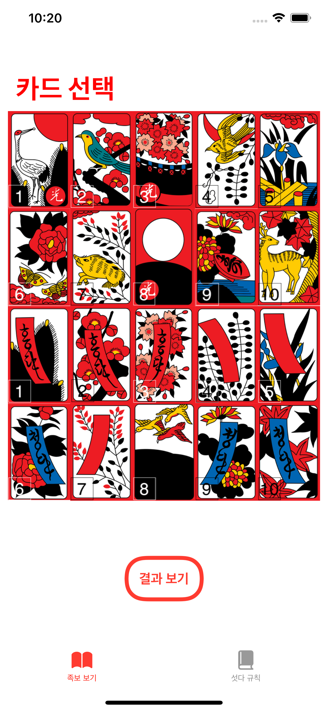
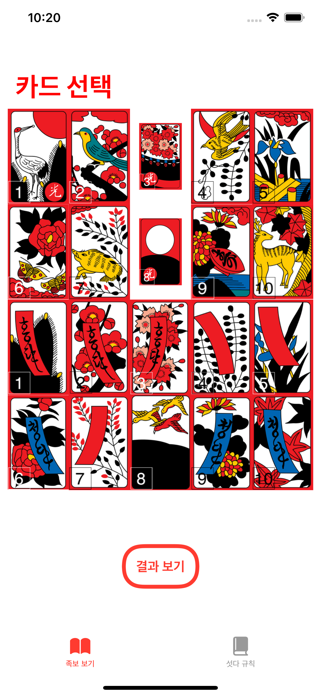

친구들 또는 지인들과의 섯다 게임을 처음한다면 설치하세요. 게임에서 승리할 수 있도록 도와줄게요
섯다 게임의 룰이나 패의 족보 조합을 잘 알지 못하는 사람들은 이 앱을 참고하여 자신이 뽑은 패의 족보를 확인할 수 있습니다.
-앱을 실행하여 자신이 뽑은 두 패를 선택하여 결과를 확인합니다
-결과를 확인한 후 다시 돌아가서 다음 패를 확인할 수 있습니다
-결과 창의 설명 버튼을 클릭하면, 특수 족보들에 대한 간단한 설명들을 확인할 수 있습니다